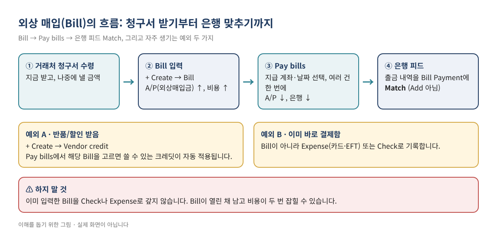
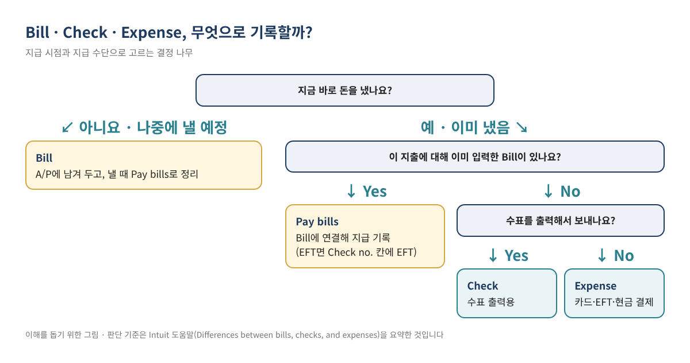
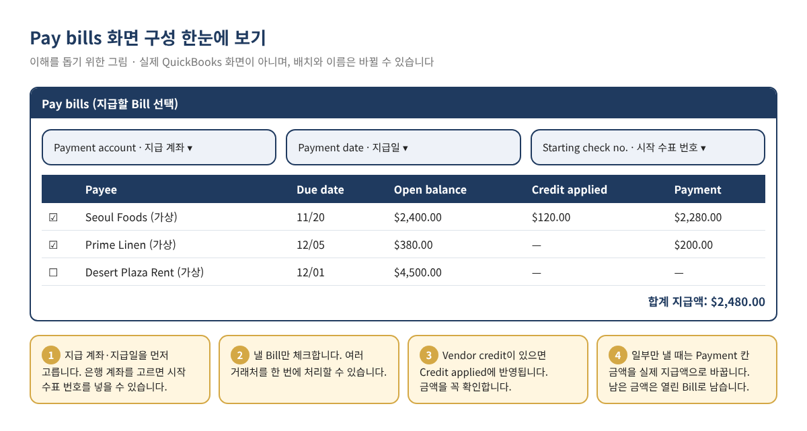
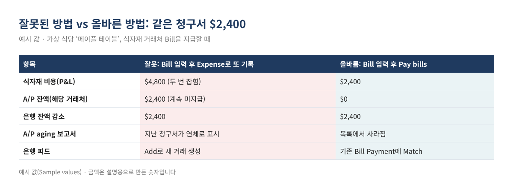

외상 매입이 장부에서 꼬이는 이유: QBO Bill 입력·일괄 지급·Vendor credit·거래처별 관리 정리
거래처에서 물건을 먼저 받고 대금은 2주나 한 달 뒤에 내는 경우가 많습니다. 이런 외상 매입을 그때그때 은행 출금으로만 기록하면, 지금 거래처에 얼마를 갚아야 하는지, 어느 청구서가 연체인지 장부만 보고는 알 수 없습니다. 반대로 Bill을 입력해 놓고 돈을 낼 때 Expense나 Check로 한 번 더 기록하면 비용이 두 번 잡히고 Bill은 계속 미지급으로 남습니다.
이 글은 QuickBooks Online(QBO)에서 Bill(외상 매입) 입력 → Pay bills(지급) → 은행 피드 Match로 이어지는 기본 흐름과, 여러 건을 한 번에 내는 방법, 일부만 지급하는 방법, 반품·할인을 Vendor credit으로 처리하는 방법, 매달 같은 금액의 Bill을 자동으로 만드는 방법, 거래처별 미지급 잔액을 확인하는 보고서까지 단계별로 정리합니다. 시리즈 첫 글 QuickBooks Online 기초 가이드에서 짧게 소개한 지출 관리를 자세히 다루며, 앞 글 인보이스부터 입금까지의 매출 쪽(A/R) 흐름과 짝을 이루는 매입 쪽(A/P) 이야기입니다.
이런 분께 필요합니다 ☐ 식자재·원단·재고를 외상으로 받고 나중에 한꺼번에 결제합니다 ☐ 거래처별로 아직 갚지 않은 금액을 바로 알고 싶습니다 ☐ Bill을 입력했는데 지급 후에도 미지급으로 남아 있습니다 ☐ 반품이나 거래처 할인을 어떻게 기록할지 모르겠습니다 ☐ 매달 같은 임대료·리스료 Bill을 손으로 입력하고 있습니다
1. Bill, Check, Expense는 무엇이 다른가
Intuit 도움말은 세 거래의 차이를 지급 시점으로 설명합니다. 지금 물건이나 서비스를 받고 돈은 나중에 낼 때는 Bill을 쓰고, 산 뒤에 갚을 돈이 남지 않는 경우(바로 결제한 경우)에는 Check나 Expense를 씁니다. 수표를 출력해서 보내야 하면 Check, 카드나 EFT(전자이체)로 냈다면 Expense를 고릅니다.
| 구분 | 언제 쓰나 | 장부에 남는 것(요약) |
|---|---|---|
| Bill | 청구서를 받았지만 아직 내지 않음 | 비용 기록 + A/P(외상매입금) 증가. Pay bills로 닫을 때까지 미지급으로 남음 |
| Pay bills(Bill Payment) | 입력해 둔 Bill을 낼 때 | A/P 감소 + 은행(또는 카드) 잔액 감소 |
| Check | 바로 결제, 수표 출력 필요 | 비용과 지급을 한 번에 기록. A/P 잔액 없음 |
| Expense | 카드·EFT·현금으로 바로 결제 | 비용과 지급을 한 번에 기록. A/P 잔액 없음 |
| Vendor credit | 반품, 거래처 할인, 청구 오류 정정 | 해당 거래처에 갚을 금액(A/P) 감소. Pay bills에서 Bill에 적용 |
가장 중요한 규칙 Intuit 도움말은 이미 입력한 Bill을 Check나 Expense로 갚지 말라고 분명히 안내합니다. 그렇게 하면 Bill이 미지급으로 남고 거래처 잔액도 줄지 않습니다. 이미 입력한 Bill은 반드시 Pay bills로 닫습니다.

Bill을 꼭 써야 하는 것은 아닙니다. 거래처가 몇 곳 안 되고 대부분 바로 카드로 결제한다면 Expense만으로도 충분합니다. 하지만 외상 거래가 많거나, 지급 기한을 놓쳐 연체료를 낸 적이 있거나, 회계사가 발생주의(accrual) 기준 보고서를 원한다면 Bill이 훨씬 편합니다. Intuit도 Bill은 거래처별로 갚을 돈을 추적하는 A/P 용도라고 설명합니다.

2. 시작 전 준비: 요금제와 설정
요금제 확인
Intuit의 Simple Start 소개 페이지는 Essentials가 Simple Start의 기능에 Bill 관리와 시간 추적을 더한다고 설명하고, Essentials 소개 페이지는 Bill 상태 추적, 반복 지급, 여러 거래처 일괄 지급을 Essentials 기능으로 소개합니다. 한편 요금제 비교 페이지에는 Bill Pay(온라인 지급) 관련 문구가 요금제마다 다르게 적혀 있어, 두 페이지의 표현이 완전히 같지는 않습니다. 쓰고 있는 요금제에서 + Create(+ 새로 만들기) 메뉴에 Bill과 Pay bills가 보이는지 먼저 확인하십시오. 요금과 기능 구성은 자주 바뀌므로 숫자는 이 글에 적지 않습니다.
거래처와 계정 준비
- 거래처(Vendor)를 미리 등록해 둡니다. 엑셀로 한 번에 올리는 방법은 고객·거래처·상품 목록 한 번에 가져오기를 참고하십시오.
- 비용 계정(식자재, 임대료, 수리비 등)이 Chart of Accounts에 있어야 합니다. 업종별 예시는 업종별 Chart of Accounts 예시에 있습니다.
- 상품(Item) 단위로 매입을 기록하려면 Items 표를 켭니다. Intuit 도움말 기준 경로는 Settings ⚙ → Account and settings → Expenses 탭에서 Bills and expenses 섹션의 연필 아이콘을 눌러 Show Items table on expense and purchase forms를 켜는 것입니다.
- 처음 QBO를 시작하면서 이미 미지급 청구서가 있었다면, 시작일 이전 Bill을 한 건씩 입력해 거래처별 잔액을 맞춰 두는 편이 깔끔합니다. 기초 잔액 정리는 기초 잔액과 Chart of Accounts 세팅과 Opening Balance Equity 정리를 참고하십시오.
3. Bill 입력하기 (단계별)
- + Create(또는 + New) → Bill을 선택합니다. 메뉴가 다르게 보이면 검색창에 "bill"을 입력합니다. Bill 목록은 All apps → Expenses & Bills → Bills에서 볼 수 있습니다.
- Vendor에서 거래처를 고릅니다.
- Terms(지급 조건)를 고릅니다. 예를 들어 Net 15는 15일 안에 지급한다는 뜻이고, 고르면 Due date가 맞춰집니다.
- Bill date, Due date, Bill no.를 종이 청구서에 적힌 그대로 입력합니다. Bill no.를 정확히 넣어 두면 같은 청구서를 두 번 입력하는 실수를 찾기 쉽습니다.
- Category details에 비용 계정과 금액을 넣습니다. 상품 단위로 기록한다면 Item details를 사용합니다.
- 특정 고객에게 다시 청구할 비용이라면 Billable 체크와 Customer를 지정할 수 있습니다(설정에서 해당 기능을 켜야 보입니다).
- 청구서 PDF나 사진을 첨부해 두고 Save and close를 누릅니다.
팁 Intuit 도움말에 따르면 청구서 파일(PDF, JPG, PNG 등)을 올려 Bill을 만드는 방법도 있습니다. 이 경우 자동으로 읽힌 내용이 맞는지 거래처, 금액, 날짜를 꼭 다시 확인하십시오. 휴대폰 영수증 관리는 이 시리즈 9편에서 자세히 다룰 예정입니다.
4. Pay bills로 여러 건을 한 번에 지급하기
Pay bills 화면에서는 여러 거래처의 Bill을 한 번에 골라 지급 기록을 만들 수 있습니다.
- + Create → Pay bills를 선택합니다(대시보드의 Expenses & Pay Bills 메뉴에서도 들어갈 수 있습니다).
- Payment account에서 돈이 나간 계좌를 고릅니다. 수표 계좌나 저축 계좌를 고르면 Starting check no.를 입력할 수 있습니다. 신용카드로 냈다면 해당 카드 계정을 고릅니다.
- Payment date를 실제 출금일로 맞춥니다. 은행 피드와 맞추기 쉬워집니다.
- 이번에 낼 Bill만 체크합니다.
- 일부만 낸다면 Payment 칸 금액을 실제 지급액으로 바꿉니다. 남은 금액은 열린 Bill로 남습니다.
- Vendor credit이 있으면 Credit applied 금액을 확인하고 저장합니다.
전자 지급일 때 Intuit 도움말은 수표가 아니라 전자 이체로 냈다면 Check no. 칸에 "EFT"를 입력하라고 안내합니다. 수표 번호와 섞이지 않아 나중에 찾기 쉽습니다.

은행 피드에서는 Match
지급 기록을 만든 뒤 은행 피드에 같은 출금이 내려오면 Add가 아니라 Match로 기존 Bill Payment에 연결합니다. Add를 누르면 같은 비용이 새 거래로 한 번 더 생깁니다. Intuit 도움말에 따르면 QuickBooks Bill Pay로 낸 지급은 출금이 처리되면 자동으로 맞춰집니다. 은행 피드 사용법은 QBO 은행 연결 완전 정리를 참고하십시오.
QuickBooks Bill Pay(온라인 지급)를 쓸 때
QBO 안에서 ACH나 수표 발송으로 실제 송금까지 하는 기능이 QuickBooks Bill Pay입니다. Intuit 도움말은 Unpaid 탭의 Action 열에서 지급을 예약하는 흐름을 안내하며, Bill Pay 등급에 따라 승인 단계가 추가될 수 있다고 설명합니다. 무료 범위, 월 한도, 건당 수수료 같은 조건은 요금제 페이지 각주에 따로 적혀 있고 바뀔 수 있으므로, 쓰기 전에 현재 조건을 직접 확인하십시오. 송금 기능을 쓰지 않고 은행 웹사이트에서 따로 냈다면, 지금까지 설명한 Pay bills 기록만 하면 됩니다.
5. 반품·할인·환불: Vendor credit
거래처가 불량품 반품을 받아 주거나, 청구 금액을 깎아 주거나, 이미 낸 돈을 돌려줄 때는 Vendor credit을 씁니다. Intuit 도움말 기준으로 정리하면 다음과 같습니다.
| 상황 | 기록 방법 | 확인할 점 |
|---|---|---|
| 아직 안 낸 Bill에서 금액을 빼 줌 | + Create → Vendor credit 입력 후, Pay bills에서 해당 Bill 선택 | 쓸 수 있는 크레딧이 자동 적용되므로 Credit applied 금액 확인 |
| 이미 낸 Bill에 대해 환불 수표를 받음 | Vendor credit 입력 → Bank deposit(계정: Accounts Payable) → Pay bills에서 입금 선택 | Total payment가 $0.00인지 확인 |
| Bill 없이 바로 결제한 비용(Expense·Check)을 환불받음 | + Create → Bank deposit, 계정은 원래 비용 계정 | Received From에 거래처 선택 |
| 신용카드로 환불받음 | + Create → Credit card credit, 계정은 원래 비용 계정 | 카드 명세서 금액과 일치 확인 |
주의 Vendor credit의 Category는 원래 Bill과 같은 비용 계정으로 넣습니다. 다른 계정으로 넣으면 비용 계정끼리 금액이 어긋나 손익계산서를 읽기 어려워집니다. 재고 상품을 반품했다면 Intuit 도움말은 해당 상품이 재고로 돌아간다고 설명하며, 불량품이라면 재고 조정이 필요할 수 있습니다(재고 관리는 이 시리즈 20편에서 다룰 예정입니다).
6. 매달 같은 Bill은 반복 거래로
임대료, 장비 리스료, 정기 서비스료처럼 매달 같은 Bill은 반복 템플릿으로 만들어 두면 입력을 빠뜨리지 않습니다. Intuit 도움말 기준 순서는 다음과 같습니다.
- 새 Bill을 만들거나 기존 Bill을 엽니다.
- 화면 아래쪽의 Make recurring을 누릅니다.
- 템플릿 이름을 넣고 Type을 고릅니다(아래 표).
- 며칠 전에 만들지(Create _ days in advance), 반복 간격(Interval), 시작일과 종료 조건을 정하고 Save template을 누릅니다.
만들어 둔 템플릿은 All apps → Accounting → Recurring transactions 목록에서 수정하거나 일시 중지할 수 있습니다.
| Type | 동작(Intuit 도움말 요약) | 어울리는 예 |
|---|---|---|
| Scheduled | 정한 일정에 Bill이 자동으로 만들어짐 | 금액이 매달 같은 임대료 |
| Reminder | 정한 때 알림만 오고, 내용을 고쳐서 직접 만듦 | 금액이 조금씩 바뀌는 공과금 |
| Unscheduled | 일정 없이 필요할 때 목록에서 불러와 사용 | 가끔 쓰는 수리 업체 |
팁 공과금처럼 금액이 매달 바뀌는 Bill을 Scheduled로 만들면 실제 청구서와 다른 금액이 쌓입니다. 이런 Bill은 Reminder가 안전합니다. 미리 낸 1년치 보험료처럼 여러 달로 나눠야 하는 비용은 Prepaid 비용 상각을 참고하십시오.
7. 거래처별로 얼마를 갚아야 하나: A/P 보고서
Intuit의 연말 가이드는 거래처 잔액을 확인할 때 Reports → Standard reports에서 Accounts payable aging summary 또는 Accounts payable aging detail을 찾아 열린 Bill을 확인하라고 안내하며, 이 보고서가 Essentials, Plus, Advanced에서 제공된다고 적고 있습니다. 보고서 열의 의미는 다음과 같습니다.
| 열 | 뜻 (Intuit 도움말 요약) | 예시 값 / Sample values (아래 메이플 테이블, 12월 3일 기준) |
|---|---|---|
| Current | 아직 지급 기한이 되지 않은 금액 | $180.00 (Prime Linen, 12/05 만기) |
| 1-30 | 기한이 1~30일 지난 금액 | $4,500.00 (임대료, 12/01 만기) |
| 그 뒤 기간 열 (31-60 등) | 기한이 지난 일수 구간별 금액. 구간은 보고서 설정에 따라 다를 수 있음 | $0.00 |
Intuit 도움말에 따르면 aging은 Due date 기준으로 계산되며, Due date가 없는 거래는 받는 즉시 지급(due on receipt)으로 보아 하루만 지나도 연체로 표시됩니다. Bill에 Terms와 Due date를 꼭 넣어야 하는 이유입니다. 보고서의 A/P 합계는 Balance Sheet의 Accounts Payable 잔액과 같은 날짜 기준으로 맞아야 합니다. 맞지 않으면 A/P 계정에 일반 분개가 직접 들어갔는지 확인해 보십시오.
8. 예시: 가상 식당 ‘메이플 테이블’의 11월 외상 매입
라스베이거스의 가상 한식당 ‘메이플 테이블’이 11월에 받은 청구서와 지급 내역입니다. 모든 이름과 숫자는 설명용으로 만든 예시 값(Sample values)입니다.
| 거래처(가상) | Bill date | Terms / Due date | 금액 | 11월 18일 처리 |
|---|---|---|---|---|
| Seoul Foods | 11/05 | Net 15 / 11/20 | $2,400.00 | 파손품 $120 Vendor credit 적용, $2,280 지급 |
| Prime Linen | 11/05 | Net 30 / 12/05 | $380.00 | $200만 일부 지급, $180 남김 |
| Desert Plaza Rent | 11/20 | 12/01 지급 | $4,500.00 | 아직 지급 안 함 |
| 합계 | $7,280.00 | 현금 지출 $2,480.00 |
- 세 장의 청구서를 받는 대로 Bill로 입력합니다. A/P 합계는 $2,400 + $380 + $4,500 = $7,280입니다.
- Seoul Foods에서 파손된 식자재 $120를 깎아 주기로 해서, 식자재 비용 계정으로 Vendor credit $120을 입력합니다.
- 11월 18일 Pay bills에서 Seoul Foods와 Prime Linen을 체크합니다. Seoul Foods는 크레딧 $120이 자동 적용되어 지급액이 $2,280이 되고, Prime Linen은 Payment 칸을 $200으로 바꿉니다. 은행 출금 합계는 $2,280 + $200 = $2,480입니다.
- 처리 후 남은 A/P는 $7,280 − $2,400(크레딧 $120 + 지급 $2,280) − $200 = $4,680이고, 내역은 Prime Linen $180 + Desert Plaza Rent $4,500입니다.
- 은행 피드에 출금 두 건이 내려오면 각각 Bill Payment에 Match합니다.

9. 자주 하는 실수
- Bill을 Expense나 Check로 다시 갚기: 비용이 두 번 잡히고 Bill은 계속 미지급으로 남습니다. 이미 그렇게 했다면 중복 거래를 찾아 정리해야 합니다. 중복 거래와 Reconcile 차이 찾기가 도움이 됩니다.
- 은행 피드에서 Add 누르기: 이미 Pay bills로 기록한 출금을 Add로 새로 만들면 같은 결과가 생깁니다. 금액과 거래처가 같은 Bill Payment가 있으면 Match를 고릅니다.
- Due date를 비워 두기: aging 보고서에서 모든 Bill이 바로 연체로 보입니다.
- 같은 청구서 두 번 입력: Bill no.를 비워 두면 찾기 어렵습니다. 청구서 번호를 꼭 넣습니다.
- 반품을 Bank deposit에 매출 계정으로 기록: 거래처 환불은 매출이 아닙니다. 원래 비용 계정이나 A/P를 써야 합니다.
- Vendor credit을 다른 계정으로 입력: 비용 계정 잔액이 서로 어긋납니다. 이미 여러 건이 잘못 들어갔다면 일괄 재분류 분개를 검토해 보십시오.
10. 자주 묻는 질문 (FAQ)
Q1. Bill을 입력하면 그날 비용으로 잡히나요?
일반적으로 발생주의(Accrual) 기준 보고서에서는 Bill date에 비용이 보이고, 현금주의(Cash) 기준 보고서에서는 실제로 지급한 날에 비용이 보입니다. 어느 기준으로 세금 신고를 하는지는 사업체마다 다르므로 담당 세무 전문가와 확인하십시오.
Q2. 카드로 낸 Bill은 어떻게 기록하나요?
Pay bills의 Payment account에서 해당 신용카드 계정을 고르면 됩니다. Intuit 도움말은 Pay bills로 수표, 신용카드, 현금 지급을 모두 기록할 수 있다고 설명합니다. 카드 대금 납부 자체는 이 시리즈 10편에서 다룰 예정입니다.
Q3. 지급 기록을 잘못 만들었는데 지우면 되나요?
지급 기록을 지우거나 Void하면 연결된 Bill과 은행 잔액에 영향이 가고, 이미 Reconcile을 마친 기간이라면 맞춰 둔 잔액이 달라질 수 있어 주의가 필요합니다. 거래 수정 방법은 이 시리즈 11편에서 자세히 정리할 예정입니다.
Q4. 거래처가 보낸 월간 명세서(Statement)도 Bill로 입력하나요?
보통은 명세서에 적힌 개별 청구서(Invoice)를 Bill로 입력하고, 명세서는 A/P 잔액이 맞는지 대조하는 데 씁니다. 명세서 합계를 한 건으로 입력하면 이미 입력한 청구서와 겹칠 수 있습니다.
Q5. 1099를 받아야 하는 거래처는 어떻게 관리하나요?
거래처 정보에 1099 대상 여부를 표시해 두면 연말에 지급 합계를 모으기 쉽습니다. 1099 기준 금액과 주별 신고는 연말 정리를 다룰 16편에서 공식 자료를 확인해 정리할 예정입니다.
11. 셀프 체크리스트
- ☐ 외상으로 받는 거래처는 Bill로, 바로 낸 비용은 Expense나 Check로 기록하고 있다
- ☐ 모든 Bill에 Terms, Due date, Bill no.가 들어 있다
- ☐ 이미 입력한 Bill은 Pay bills로만 지급 처리한다
- ☐ 은행 피드의 지급 출금은 Add가 아니라 Match로 처리한다
- ☐ 반품·할인은 원래 비용 계정으로 Vendor credit을 입력했다
- ☐ 매달 같은 Bill은 반복 템플릿(Scheduled 또는 Reminder)으로 만들어 두었다
- ☐ 월말에 Accounts payable aging summary와 Balance Sheet의 A/P 잔액이 맞는지 확인한다
- ☐ 91일 이상 지난 Bill이 실제로 남은 빚인지, 이미 낸 것인지 확인했다
함께 보면 좋은 글
- QuickBooks Online 기초 가이드: 처음 시작할 때 꼭 알아야 할 10가지
- QBO 처음 시작하기: 기초 잔액과 Chart of Accounts 세팅
- 업종별 Chart of Accounts 예시
- 고객·거래처·상품 목록 엑셀로 한 번에 가져오기
- 직원·회계사 초대와 권한 설정
- QBO 은행 연결 완전 정리: Match, Add, Rule
- 견적서(Estimate)에서 인보이스까지
- 인보이스부터 입금까지: 부분 결제·할인·환불·크레딧
- 중복 거래와 Reconcile 차이 찾기
- Prepaid 비용 상각
이 글은 일반적인 교육 목적의 정보이며 세무·법률·재무 자문이 아닙니다. 개별 상황은 자격을 갖춘 전문가와 상의하십시오. QuickBooks Online의 화면, 메뉴 이름, 요금제별 기능과 가격은 자주 바뀌므로 실제로 적용하기 전에 현재 화면과 Intuit 공식 안내를 확인하십시오. 예시에 나오는 사업체와 거래처는 모두 가상입니다.
QuickBooks is a registered trademark of Intuit Inc.; not affiliated with or endorsed by Intuit.
출처
- Intuit QuickBooks 도움말: Enter bills in QuickBooks Online
- Intuit QuickBooks 도움말: Pay bills in QuickBooks Online
- Intuit QuickBooks 도움말: How to enter and pay bills
- Intuit QuickBooks 도움말: Differences between bills, checks, and expenses
- Intuit QuickBooks 도움말: Enter vendor credits and refunds in QuickBooks Online
- Intuit QuickBooks 도움말: How to set up a recurring bill
- Intuit QuickBooks 도움말: Create recurring invoices and other transactions in QuickBooks Online
- Intuit QuickBooks 도움말: Why aging reports have both Current and 1-30
- Intuit QuickBooks 도움말: Year-end guide for QuickBooks Online
- QuickBooks Community(Intuit 커뮤니티 매니저 글): How to Record and Pay Bills in QuickBooks Online
- Intuit: QuickBooks Online Simple Start 소개 페이지
- Intuit: QuickBooks Online Essentials 소개 페이지
- Intuit: QuickBooks Online 요금제 페이지